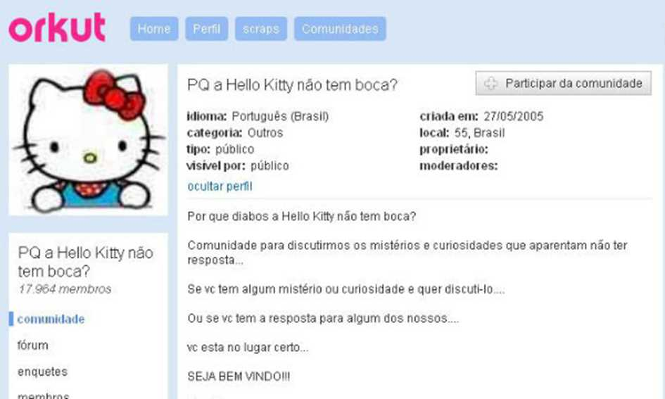
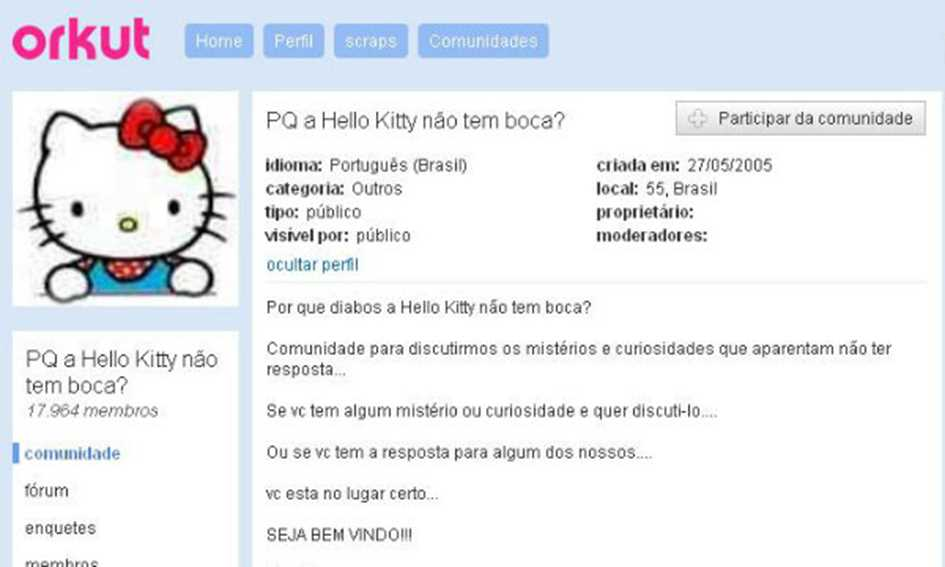
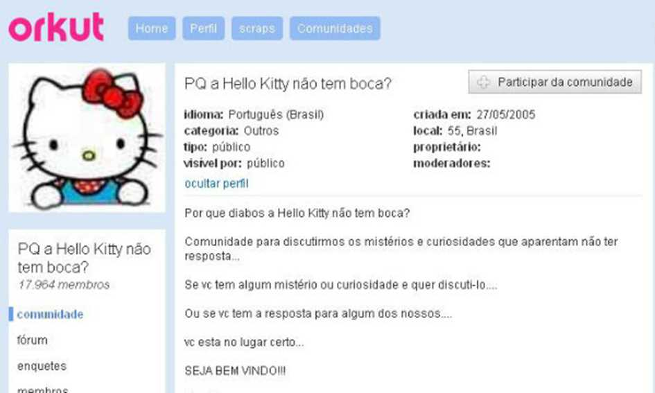
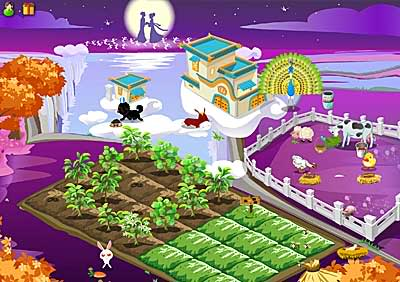
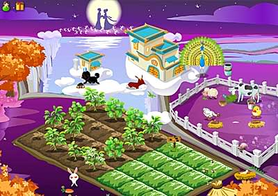

Desativado à quase 8 anos ele está de volta, uma das redes sociais pioneiras está de volta trazendo consigo muita nostalgia e expectativas para seus usuários!
A volta do orkut foi um dos assuntos mais pesquisados nos últimos dias. Desde a anunciação de sua volta, foi possível observar questionamentos e dúvidas dos internautas, como: "Porque saiu do ar?"; "Quem é o dono do orkurt?"; "Vou recuperar minha conta e minhas comunidades?"; "Qual o diferencial dessa nova versão?". Essas perguntas serão respondidas após relembrarmos de como era a plataforma e o quanto já nos divertimos com ela.
Quando se fala em ORKUT, não podemos esquecer das lendárias comunidades. Lembram como elas funcionavam? Aposto que sim! As comunidades marcaram gerações, principalmente os jovens dos anos 2000.
As comunidades eram uma espécie de fórum de discussão de um assunto específico de seu interesse, onde os usuários da rede podiam deixar seus comentários para aquelas pessoas de interesse em comum. Elas funcionavam como uma espécie de "currículo". Se naquela época você gostaria de saber quais por quais assuntos o seu crush interessava, era só ver de quais comunidades ele era membro.
Vamos relembrar as comunidades mais famosas da época:
O joguinho mais badalado do Orkut simulava uma fazenda, onde seus gamers tinham que cuidar de suas plantações, animais e etc. O jogo possibilitava os jogadores visitar a plantação de seus amigos e interagir em comunidade. O jogo permitia configurar sua fazenda do modo de sua preferência, então era possível abusar da criatividade e iamginação. Esse é um dos jogos mais lembrados do site, pois foi um clássico. Será que ele vai voltar?

 

Sentiu o coração quentinho relembrando todos os bons momentos passados nessa rede social? Uma maravilha saber que podemos matar a saudade de pertinho não é mesmo? Bom, agora podemos! Apesar de não ser o original, esse novo orkut irá nos proporcionar momentos incríveis novamente com todos esses recursos e muitooo mais... Lembrando que esse é um site da google, e você pode acessar pelo link https://www.orkut.br.com/. Acesse, mande para seus amigos e vamos curtir essa nostalgia juntos.